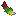

LumyMon 传说追踪与祭坛召唤
Lumyverse 官方为 COBBLEVERSE 整合包量身打造的传说宝可梦增强模组（v0.6.6），让传说与幻之宝可梦的获取变成一场有目标、有仪式感的完整冒险。
🧬 什么是 LumyMon？
LumyMon 是 Lumyverse 团队为 COBBLEVERSE 开发的核心模组，专注于 传说宝可梦（Legendary / Mythical） 的完整获取链：不再靠碰运气野外刷新，而是通过 合成雷达 → 追踪定位 → 祭坛召唤 → 史诗对战 四步走，亲手把神兽收入队伍。
模组还内置了 道馆 / 四天王地图导航、Regi 专属矿石、STARK 锻造台 与 Raid 晶体挑战，让旅程的每一步都有明确目标。本服转盘 OP 池的 宝可雷达 正是这条传说之路的起点！

⚙️ 六大核心系统
📡 传说雷达追踪
合成「宝可雷达」后，配合稀有 定位芯片 (Locator Chip) 与定制制图台，即可生成地图直接指向传说宝可梦的精确位置——从关都到帕底亚，全地区神兽尽在掌握。
🏛️ 祭坛召唤仪式
在专属祭坛上使用特定道具触发遭遇战，伴随自定义粒子与音效。阿尔宙斯、达克莱伊、无极汰那、雷吉艾勒奇、雷吉铎拉戈……仪式感拉满的神兽见面礼。
🌌 专属冒险维度
为传说宝可梦打造的专属空间：新月岛（达克莱伊）、神奥神殿（阿尔宙斯），内部有独特机制与沉浸式场景。
⚒️ STARK 锻造台
专属合成系统，将传说碎片锻造成完整道具（如熔岩石等），是合成分裂雷达、超梦进化石等高阶物品的核心途径。
💎 Regi 矿石与资源
新增独特矿石与资源点，采集后可合成雷吉洛克 / 雷吉艾斯 / 雷吉斯奇鲁等雷吉家族的召唤道具。
⚔️ Raid 晶体挑战
极巨化晶体 Raid 战斗系统，与伙伴组队挑战超强 Boss 宝可梦，赢取稀有掉落。
🗺️ 传说雷达一览
宝可雷达是起点，合成对应神兽雷达即可精准追踪目标。以下为本服可获得的雷达与对应传说宝可梦：
| 雷达 | 追踪目标 | 雷达 | 追踪目标 |
|---|---|---|---|
| 急冻鸟雷达 | 急冻鸟 | 闪电鸟雷达 | 闪电鸟 |
| 火焰鸟雷达 | 火焰鸟 | 洛奇亚雷达 | 洛奇亚 |
| 凤王雷达 | 凤王 | 固拉多雷达 | 固拉多 |
| 盖欧卡雷达 | 盖欧卡 | Mega烈空坐雷达 | 超级烈空坐 |
| 骑拉帝纳雷达 | 骑拉帝纳 | 时空雷达 | 帝牙卢卡 / 帕路奇亚 |
| 席多蓝恩雷达 | 席多蓝恩 | 雷吉洛克雷达 | 雷吉洛克 |
| 雷吉艾斯雷达 | 雷吉艾斯 | 雷吉斯奇鲁雷达 | 雷吉斯奇鲁 |
| 雷吉奇卡斯雷达 | 雷吉奇卡斯 | 蕾冠王·白马雷达 | 蕾冠王 (冰马) |
| 蕾冠王·黑马雷达 | 蕾冠王 (灵马) | 古剑豹雷达 | 古剑豹 |
| 古玉鱼雷达 | 古玉鱼 | 鼎鹿雷达 | 鼎鹿 |
| 厄诡椪雷达 | 厄诡椪 | 奈克洛兹玛·黎明雷达 | 奈克洛兹玛 (黎明) |
| 奈克洛兹玛·黄昏雷达 | 奈克洛兹玛 (黄昏) | 拉帝兄妹雷达 | 拉帝亚斯 / 拉帝欧斯 |
| 无极汰那雷达 | 无极汰那 | 分歧抉择雷达 | 基格尔德 |
| 极巨树雷达 | 极巨化传说 | 宝可雷达 | 传说之路的起点 |
🎒 常见传说材料与道具
👑 召唤核心
蕾冠王冠冕、闪光蕾冠王冠冕、GS球、红色锁链、牵绊缰绳、基因之楔、N合体器/分离器——神兽召唤与形态转化的关键道具。
🪶 羽翼与之翼
虹色之翼、银色之翼、冰川/雷霆/余烬之羽、月之羽翼、天界之笛、时间/空间之笛——飞行与时空系传说宝可梦的通行证。
💠 宝珠与遗物
金刚结晶、白玉/白金宝珠、朱红/靛蓝宝珠、红宝石/蓝宝石之露、原始/荒芜/以太宝石、熔融地壳、五大遗物——丰缘与神奥传说的力量之源。
大部分传说材料都可以从大厅转盘抽到（OP 金池 5.6% 概率）！抽到宝可雷达后即可开始你的传说收集之旅。详细奖池见 转盘抽卡页面。